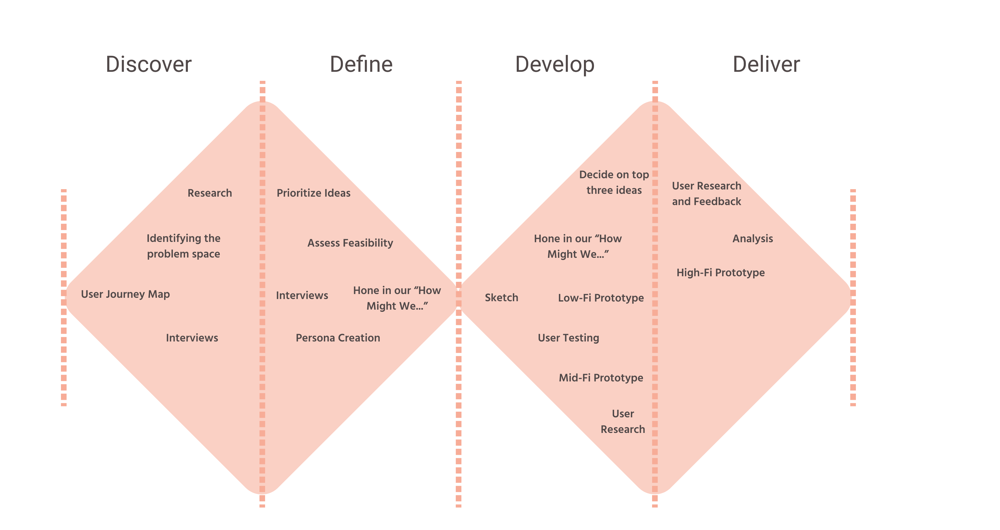
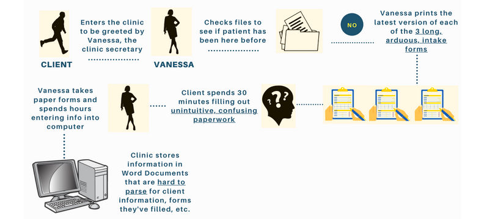
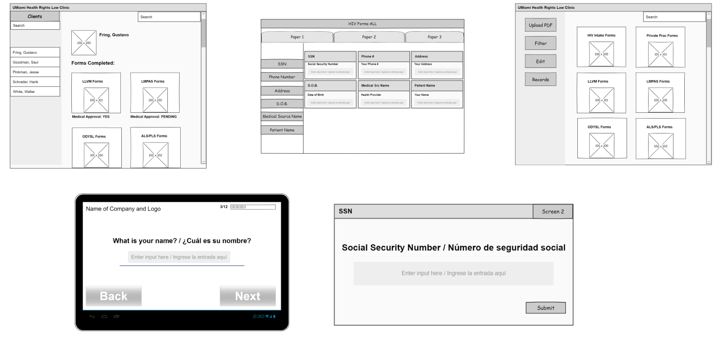
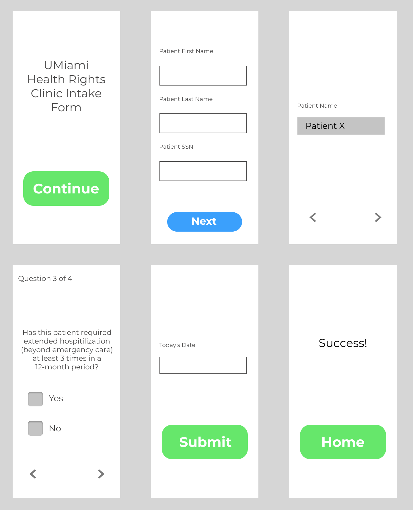
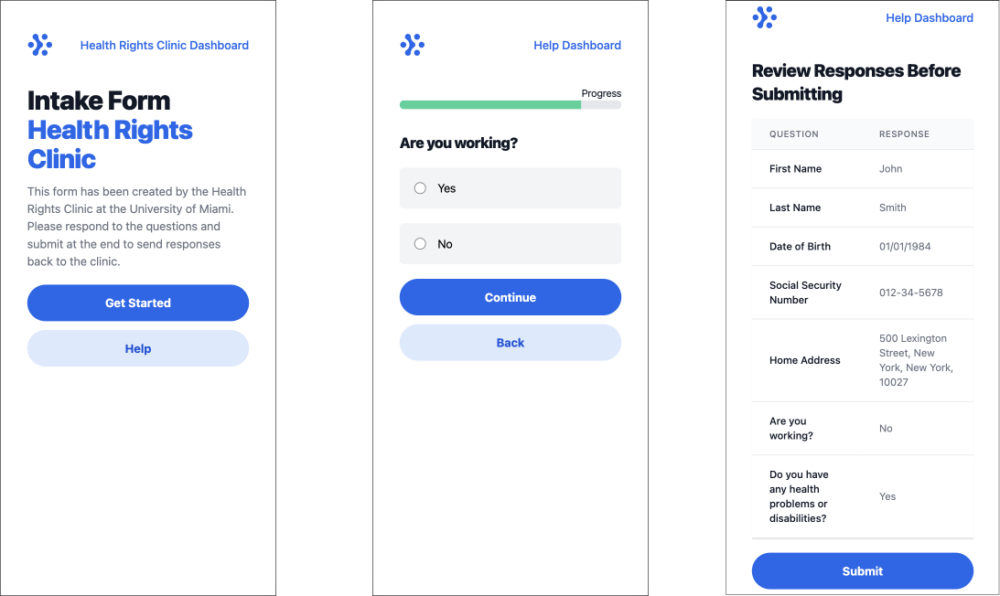
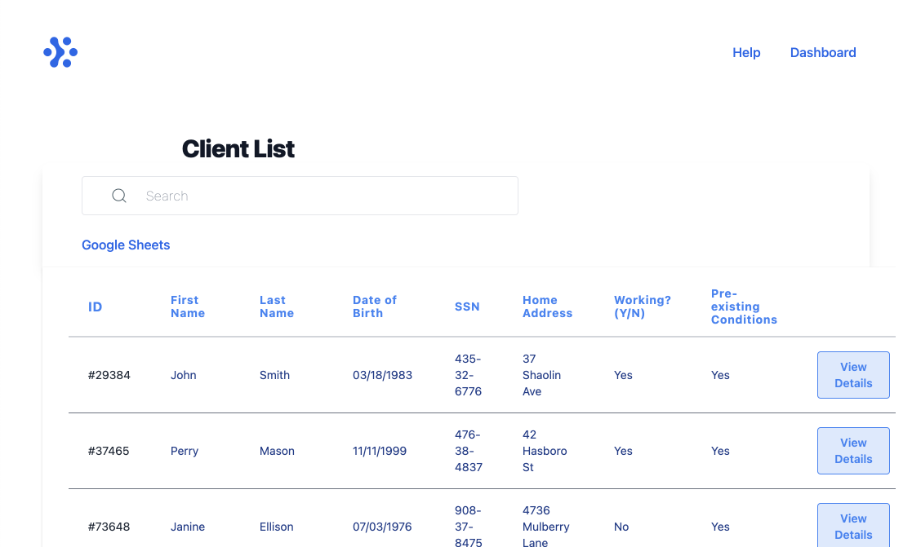

Making Healthcare Accessible: Digitizing Form-Filling at University of Miami's Health Rights Clinic
Intro
platForMed is an application that makes filling and managing medical forms intuitive. It provides an user-friendly interface for filling out complex medical forms and a dashboard for viewing all clients form information.
Team
Roopa Bhat (SEAS)
Lord Crawford (SEAS)
Eric Goetschel (GS)
Alaz Sengul (SEAS)
Duration
September 2020 - December 2020
Background
Who we're working with?

We are specifically serving the University of Miami Health Rights Clinic. The Health Rights Clinic is a medical legal partnership operated in collaboration with the UM Miller School of Medicine. Students participating in the Health Rights Clinic represent multiple clients in different legal matters related to health. Clients are low income patients of the Veteran's Administration, South Florida Aids Network, Jackson Hospital and other medical partners.
Problem
The forms that clients fill out at UM Health Rights Clinic tend to be very long and difficult to complete without help, resembling the appearance of tax forms. Furthermore, the UM Health Rights Clinic has a strenuous time managing all their client’s information and updating previous forms. Our technology is designed to specifically meet both of these needs.
Process
Double Diamond Design Process
We began our search asking the question: how can we help libraries provide health-related services? From speaking to library staff members at NYC libraries as well as their partnering organizations, we were able to learn about the various health-related services provided by libraries. After gathering all this information, we noticed a theme related to library health services: educating the public and providing resources regarding the eight health topics--Sexual and Reproductive Health, Health Insurance, Drug/Alcohol Abuse Education, Mental Health, Senior Citizen Health, Spreading awareness of resources that exist, COVID-19 Prevention Tricks and Techniques, and Pro-Bono efforts.
After we defined these themes, we did some research on finding the three most prevalent problem areas by attending health events at the Queens Public Library, speaking to individual psychologists who provide mental health resources, and collaborating with the Application Development Manager at QPL to understand the library’s digital presence. From what we learned, we were able to narrow down our scope to three key questions:
- How might we help libraries advertise their health-related programs and strengthen their digital presence?
- How might we help those who don’t have health insurance access other health resources?
- How might we help increase the presence of available mental health services through libraries?
To continue narrowing our scope, we did more research within these three spaces. From our interviews with members of the Queens Public Library, psychologists, and even health-services users, we noticed that issues regarding health insurance spanned across many settings, be it libraries, individual practitioners, or even health rights clinics. Specifically, many users within this problem space expressed difficulty with filling out health forms.
From speaking with the director of a health rights clinic for low-income populations, we learned how unintuitive it is to fill out forms related to medical processes. At the University of Miami Health Rights Clinic, a non-profit that specifically helps people access health services, the intake process requires filling out 25+ pages worth of confusing paperwork. We realized there was great potential in this space to digitize this process so we decided to focus our project on helping the clinic’s clients fill out necessary paperwork for various health services.
A key PIT concept that guided us when coming up with prototypes to address this problem was identifying questions and risks most relevant to this population. We asked ourselves: what is the tradeoff between digital complexity and efficacy of a technological solution? We wanted to digitize the process of filling out health forms by developing a clear and user-friendly interface, while also making it accessible to those who may not be very technologically literate, especially since the clinic is frequented by low-income communities. After a lot of brainstorming, we landed on two different prototypes to help people fill out health forms.
Prototypes
Our prototypes were designed around the question: how can we help people fill out health forms more intuitively? The development of our product was heavily guided by Melissa Swain, J.D., the associate director of University of Miami Health Rights Law Clinic. We learned that currently, the clinic intake process involves clients filling out 25+ pages of confusing paperwork that is printed, filled out by hand, and then entered into the computer by hand. This manual process is seen throughout most other clinics around the country as well.
The current intake process at the clinic:
Melissa suggested we design an interface capable of being on a mobile device that could be used by the client to fill out the forms in an intuitive way and could easily store the information for the clinic.
Low-Fi Prototype
TESTING:
Testing the initial prototype, we learned it was important for administrators of this service to keep track of which and when clients completed medical forms. Consequently, we made it a priority to develop a comprehensible dashboard to view patient information.
Furthermore, utilizing this technology on a mobile phone would be essential. Denise Corcoran, Director of Community Library Services at Queens Public Library, stated “A lot of customers don’t even have tablets or computers, most use their phones”. We especially had to be conscious of this since the Health Rights Clinic works with low-income populations.
Mid-Fi Prototype
TESTING:
The second prototype honed in on the needs particular needs of the U-Miami Health Rights Clinic. While testing this prototype on active healthcare seekers, we received comments such as:
- “This looks very minimal! Keep it as simple as possible.”
- “Make the text bigger, especially for us old people!”
Technical Prototype
Following our first testing period, we created a responsive-Flask prototype which would work on any mobile/web interface. We tested this prototype on a variety of people, namely Melissa Swain (Associate Director of U-Miami Health Rights Clinic). We learned from this test that not all people have a Social Security Number so we should make this question optional or not ask it at all. Additionally, we believed beforehand that it would be helpful to have a pre-population feature (where previously answered questions would pre-fill on future entries), however, when showcasing this to Melissa, she said it wouldn’t be worth the technical challenge since most form questions are unique and don’t overlap.
TESTING:
After showing Melissa a mock of the dashboard, she expressed how the clinic currently has a lengthy 20 page document with lawyer’s name mapped to clients they’re in charge of and forms they’ve submitted. She stated that it’d be useful to organize this info in a more cohesive manner. Following this test, we developed an integration with the Google Sheets API that would store form responses and be able to read those responses into the user-friendly dashboard.